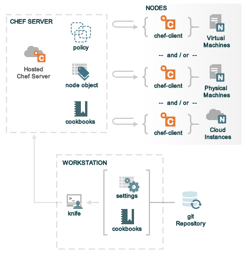

Chef is a systems and cloud infrastructure automation framework that makes it easy to deploy servers and applications to any physical, virtual, or cloud location, no matter the size of the infrastructure. Chef relies on abstract definitions (known as cookbooks and recipes) that are written in Ruby and are managed like source code. Each definition describes how a specific part of your infrastructure should be built and managed. Chef then applies those definitions to servers and applications, as specified, resulting in a fully automated infrastructure. When a new node is brought online, the only thing that Chef needs to know is which cookbooks and recipes to apply.
The following diagram shows the relationships between the various elements of a very simple Chef organization, including the Hosted Chef server, a workstations, the Chef repository, and some simple nodes that exist either in VirtualBox or Amazon Web Services.
The following sections discuss these elements in a bit more detail.
A node is any server or virtual server that is configured to be maintained by a chef-client. A node can be physical or cloud-based. A Chef organization comprises any combination of physical and cloud-based nodes. A chef-client runs on each node. Ohai is used to collect data about the system so that it is available to the chef-client during every Chef run.
A workstation is a computer that is configured to run Knife, to synchronize with the Chef repository, and interact with a single Chef Server. The workstation is the location from which most users of Chef will do most of their work, including:
Knife is a command-line tool that provides an interface between a local Chef repository and the Chef Server. Knife helps users of Chef to manage:
The Chef repository is the location in which the following data objects are stored:
The Chef repository is located on a workstation and should be synchronized with a version control system, such as git. All of the data in the Chef repository should be treated like source code.
Knife is used to upload data to the Chef Server from the Chef repository. Once uploaded, that data is used by Chef to manage all of the nodes that are registered with the Chef Server and to ensure that the correct cookbooks, environments, roles, and other settings are applied to nodes correctly.
git is the most common location to store a Chef repository that is used with a Hosted Chef account.
The Chef Server acts as a hub for configuration data. The Chef Server stores cookbooks, the policies that are applied to cookbooks, and metadata that describes each registered node in the infrastructure. Nodes use the chef-client to ask the Chef Server for configuration details, such as recipes, templates, and file distributions. The chef-client then does as much of the configuration work as possible on the nodes themselves (and not on the Chef Server). This scalable approach distributes the configuration effort throughout the organization.
Hosted Chef is a version of a Chef Server that is hosted by Opscode. Hosted Chef is cloud-based, scalable, and available (24x7/365), with resource-based access control. Hosted Chef has all of the automation capabilities of Chef, but without requiring it to be set up and managed from behind the firewall.
A cookbook is the fundamental unit of configuration and policy distribution in Chef. Each cookbook defines a scenario, such as everything needed to install and configure MySQL, and then it contains all of the components that are required to support that scenario, including:
Chef uses Ruby as its reference language for creating cookbooks and defining recipes, with an extended DSL for specific resources. Chef provides a reasonable set of resources, enough to support many of the most common infrastructure automation scenarios; however, this DSL can also be extended when additional resources and capabilities are required.
The key underlying principle of Chef is that you (the user) knows best about what your environment is, what it should do, and how it should be maintained. Chef is designed to not make assumptions about any of those things. Only the individuals on the ground—that’s you and your team—understand the technical problems and what is required to solve them. Only your team can understand the human problems (skill levels, audit trails, and other internal issues) that are unique to your organization and whether any single technical solution is viable.
The idea that you know best about what should happen in your organization goes hand-in-hand with the notion that you still need help keeping it all running. It is rare that a single individual knows everything about a very complex problem, let alone knows all of the steps that may be required to solve them. The same is true with tools. Chef provides help with infrastructure management. And Chef can help solve very complicated problems. Chef also has a large community of users who have a lot of experience solving a lot of very complex problems. That Chef community can provide knowledge and support in areas that your organization may not have and (along with Chef) can help your organization solve any complex problem.
For history of Chef, where it came from and how it evolved, watch these two (short) videos:
For more information about Opscode, cookbooks for Chef, and the Chef community: